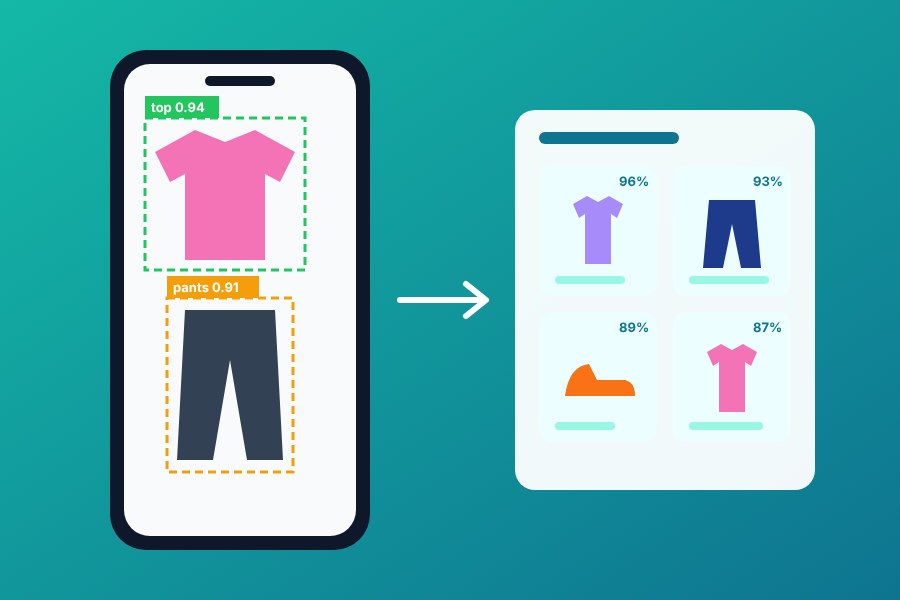

Tanzim
A multi-tenant enterprise SaaS platform
I'm building it on my own. The Django and DRF backend is complete, and the React frontend is in progress.
Backend complete, frontend in progress
I build Django systems that hold up in production, and I read the query plan before I guess.
mabdelaal474@gmail.com, linkedin.com/in/0xmustafa37, github.com/0Mustafa37, 0mustafa37.github.io
mustafa=# EXPLAIN ANALYZE SELECT * FROM career; QUERY PLAN─────────────────────────────────────────────── Append (actual years=4+ loops=daily) -> Index Scan on holouly (2022..now) Role: Mid-level Backend Developer Role: Junior Backend Developer Owns: ETEPS, Mdawm (2 live B2B platforms) -> Seq Scan on ivalley (2021..2022) Role: Full Stack Developer intern -> Seq Scan on ain_shams (2020..2024) Degree: B.Sc. Computer Science Side projects: tanzim, booclair, dress_me_up Execution Time: still running
I own backend modules end to end on two live B2B platforms, from ticketing and SLA lifecycles to warehouse serial tracking, ERP integrations and bulk data.
I'm a backend engineer in Cairo with 4+ years building high-scale Django systems. I tune queries from execution plans, design service layers that keep views thin, and mentor the interns on my team.
Agents close dozens of tickets at once. The first version wrapped the whole batch in one transaction, so a single conflict rolled everything back. I gave each ticket its own savepoint and return HTTP 207 Multi-Status, so the agent sees exactly which tickets went through and which need another look.
ETEPS, Django and PostgreSQL. Read the write-up
HTTP/1.1 207 Multi-Status [ { "ticket": 1, "status": 200 }, { "ticket": 2, "status": 200 }, { "ticket": 3, "status": 409, "error": "already_closed" }, { "ticket": 4, "status": 200 } ]
Instead of guessing, I read the EXPLAIN ANALYZE plans. They pointed to a missing composite index and to steps that didn't fit in work_mem. Fixing both cut the ticket-list latency.
ETEPS, PostgreSQL
Seq Scan on tickets Sort Method: external merge Disk Index Scan using tickets_composite_idx Sort Method: quicksort Memory
I maintain the BAAN/Infor ERP integration and a SQL Server inventory sync. The sync kept stalling at around 134K of 221K records because of a timeout. I tracked it down and fixed it, and the sync now completes.
ETEPS, BAAN/Infor ERP and SQL Server
I built an SLA deadline engine that precomputes each ticket's deadline and updates it when the ticket changes. Lists can sort and filter by deadline without working it out on every read.
ETEPS, Django and PostgreSQL
on read: compute the deadline for every row on write: ticket.sla_deadline = compute() on read: ... ORDER BY sla_deadline
I refactored ticket closing into a service layer with named domain exceptions and thin views. Each rule lives in one place, each failure has a name, and the views only turn results into responses.
ETEPS, Django and DRF
try:
close_ticket(ticket, by=request.user)
except TicketAlreadyClosed:
return conflict()
except MissingResolution:
return bad_request()
I own backend modules on two live B2B platforms built on Django, DRF, PostgreSQL, Redis and Celery:
Built and optimized APIs with the Django ORM, raw SQL and PostgreSQL, and cut response times by 25%. Contributed to the backend architecture with a focus on security and scalability.
Worked with ASP.NET MVC, the .NET Framework and Microsoft SQL Server.
Scientific Computing. My graduation project was Dress Me Up, a fashion recommender built on YOLOv8 and VGG19.
I'm building it on my own. The Django and DRF backend is complete, and the React frontend is in progress.
Brings book clubs online with real-time chat and video meetings, with a Flutter app on top.

My graduation project. It detects clothing items with YOLOv8, extracts VGG19 features and recommends matching pieces by cosine similarity, served by a Flask backend to a Flutter app.
I speak Arabic (native) and English (professional).